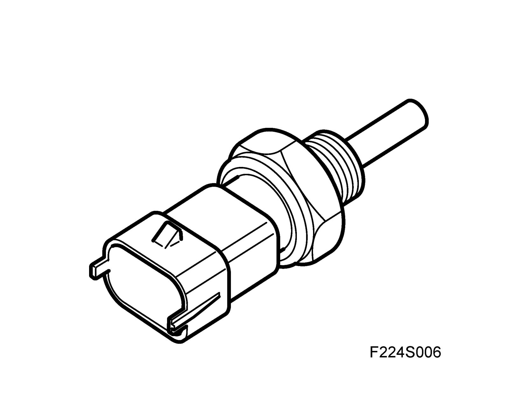
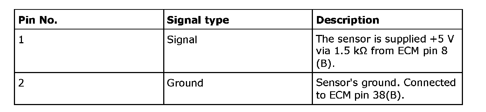
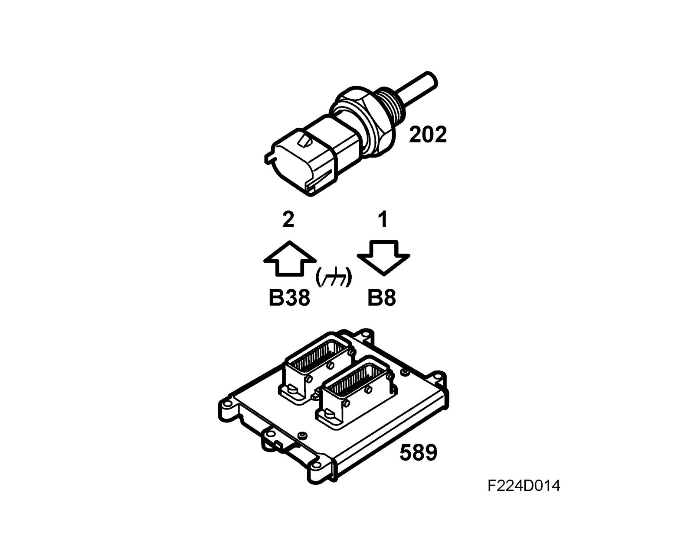
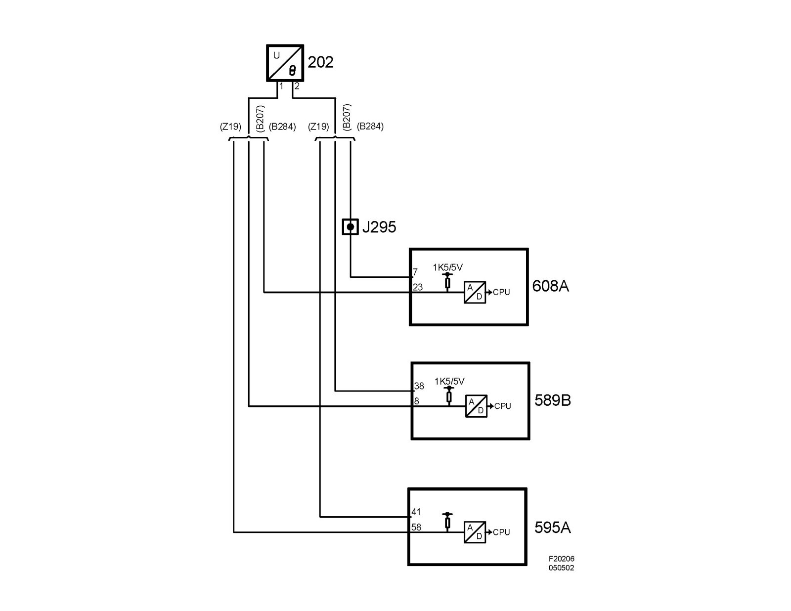

Engine - Coolant Temperature Sensor/Switch: Description and Operation
Coolant temperature sensor (202), T8Location
Coolant temperature sensor (202)
Main task
Informs the control module of current coolant temperature.
The value from the temperature sensor is used for:
- controlling the radiator fans
- determining injection duration during preinjection
- determining injection duration during starter motor cranking
- after-start enrichment
- determining when closed loop should be engaged
- correcting idling speed.
Type
The temperature sensor is of NTC type.

Connection


